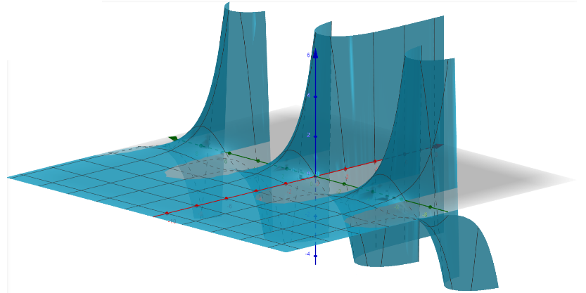

Lesson 19: The Laplacian and Harmonic Functions
The Laplacian is a powerful operator. In physics and engineering, it is used to model diffusion, heat flow, electric potential, fluid pressure, and quantum wave functions. The Laplacian of a function \(f(x, y, z)\) is defined below.
The Laplacian
\[ \nabla^2 f = \frac{\partial^2 f}{\partial x^2} + \frac{\partial^2 f}{\partial y^2} + \frac{\partial^2 f}{\partial z^2} \]
An Example
Find the Laplacian of the function below.
\[ f(x, y, z) = 7x^4 + 9y^7 + 5z^6 \]
\[
\begin{aligned}
\frac{\partial f}{\partial x} &= 28x^3 \\
\frac{\partial^2 f}{\partial x^2} &= 84x^2
\end{aligned}
\]
\[
\begin{aligned}
\frac{\partial f}{\partial y} &= 63y^6 \\
\frac{\partial^2 f}{\partial y^2} &= 378y^5
\end{aligned}
\]
\[
\begin{aligned}
\frac{\partial f}{\partial z} &= 30z^5 \\
\frac{\partial^2 f}{\partial z^2} &= 150z^4
\end{aligned}
\]
\[
\begin{aligned}
\nabla^2 f &= \frac{\partial^2 f}{\partial x^2} + \frac{\partial^2 f}{\partial y^2} + \frac{\partial^2 f}{\partial z^2} \\
&= 84x^2 + 378y^5 + 150z^4
\end{aligned}
\]
A function \(z = f(x, y)\) is harmonic if it satisfies the equation below, called the Laplace equation. Harmonic functions are useful in the study of fluid dynamics, heat, elasticity, and electricity.
The Laplace Equation
\[ \frac{\partial^2 z}{\partial x^2} + \frac{\partial^2 z}{\partial y^2} = 0 \]

An Example
Verify the function below is harmonic.
\[ z = f(x, y) = e^x \sin y \]
\[
\begin{aligned}
\frac{\partial z}{\partial x} &= e^x \sin y \\
\frac{\partial^2 z}{\partial x^2} &= e^x \sin y
\end{aligned}
\]
\[
\begin{aligned}
\frac{\partial z}{\partial y} &= e^x \cos y \\
\frac{\partial^2 z}{\partial y^2} &= -e^x \sin y
\end{aligned}
\]
\[
\begin{aligned}
\frac{\partial^2 z}{\partial x^2} + \frac{\partial^2 z}{\partial y^2} &= e^x \sin y + \left(-e^x \sin y\right) \\
&= 0
\end{aligned}
\]
Because the sum of these second-order partial derivatives is zero, the function is harmonic.